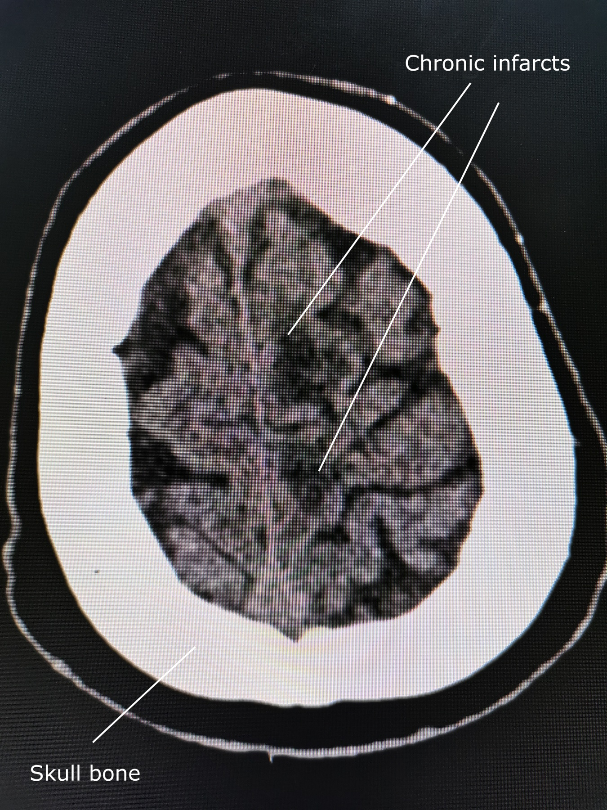

Meta + checklist · Pág. 07 de 20
Etiologia por idade: o tabelão que muda a conduta
A etiologia pode ser lida por patogênese ou por estrutura, mas o eixo prático de prova e de generalista é por idade. É ele que organiza o diagnóstico diferencial e manda na conduta — inclusive quando a imagem entra ou não.
Tabelão âncora · etiologia por idade Satélite → crise febril
| Faixa | Causa dominante | Conduta-chave |
|---|---|---|
| Neonatal | Metabólica / infecção congênita / malformação / anoxia | Investigar sempre |
| 6 m–5 a | Crise febril (≠ epilepsia) | Algoritmo no satélite pediátrico |
| 5–12 a | Genética / autolimitada | Imagem nem sempre necessária |
| Adulto | Secundária (TCE, droga, NCC…) | Investigar + RM |
| Idoso | AVE isquêmico (cicatriz) / tumor | RM |
Eixo prático: por idade
A etiologia pode ser por patogênese/estrutura; o eixo prático de prova e do generalista é por idade. Separar por idade ajuda conduta e DDx.
Neonatal e 6 meses–5 anos
Neonatal: crise não é esperada — algo errado (metabólico, infecção congênita, malformação, anoxia periparto) → investigação. 6 meses a 5 anos: o principal motivo disparado é a crise febril.
Regra de ouro / semente satélite: crise febril não é epilepsia — o algoritmo (simples × complexa, punção lombar, 6 h, anti-profilaxia) é do satélite pediátrico; aqui fica só a semente. Não pense AED contínuo por crise febril.
5–12 anos genética / adulto investiga
5 a 12 anos: domina a causa genética; crianças em geral com neurodesenvolvimento preservado; crises muitas vezes autolimitadas com maturação/mielinização. A epidemiologia é bimodal: picos em criança e idoso; o adulto tem menor carga.
Crise no adulto → “algo errado” (sequela de TCE, droga, NCC…) → investigação. Criança (exceto neonatal) com desenvolvimento normal e crises sem prejuízo evolutivo → causas frequentemente benignas; imagem nem sempre necessária. Adulto em diante → secundárias; a imagem entra.
Idoso: AVE e tumor
Idoso: o principal motivo de crise de início é o AVE, sobretudo isquêmico (o hemorrágico é possível, mas menos comum como padrão). O padrão mais comum: o AVE isquêmico deixa cicatriz → foco → epilepsia depois (abrir o AVE com crise até pode, mas não é o padrão). Tumor tem prevalência maior no idoso → reforça a imagem.
RM
A melhor imagem estrutural no eixo é a ressonância magnética.

Resumo operacional
A idade organiza DDx e conduta; febril não é epilepsia (algoritmo no satélite); RM no adulto/idoso.
Quiz
Conexão
Classificar a crise pelo início é o que destrava o tratamento — e evita o erro de chamar de generalizada pelo fim.